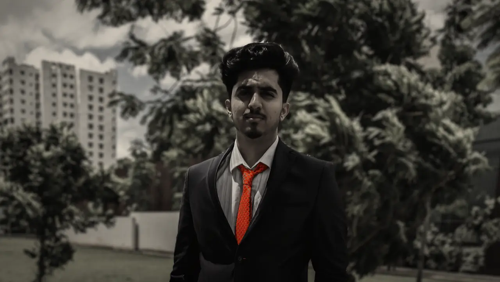

Direction A
Direction A
Night Shoot
Night photography, letterbox bars, screenplay labels and a running timecode. Tungsten amber. Condensed poster type.

Direction BThe Red Tie
Warm monochrome portraits where only the red tie keeps its colour. A red line opens into the picture. Serif titles, chapters that pan sideways.